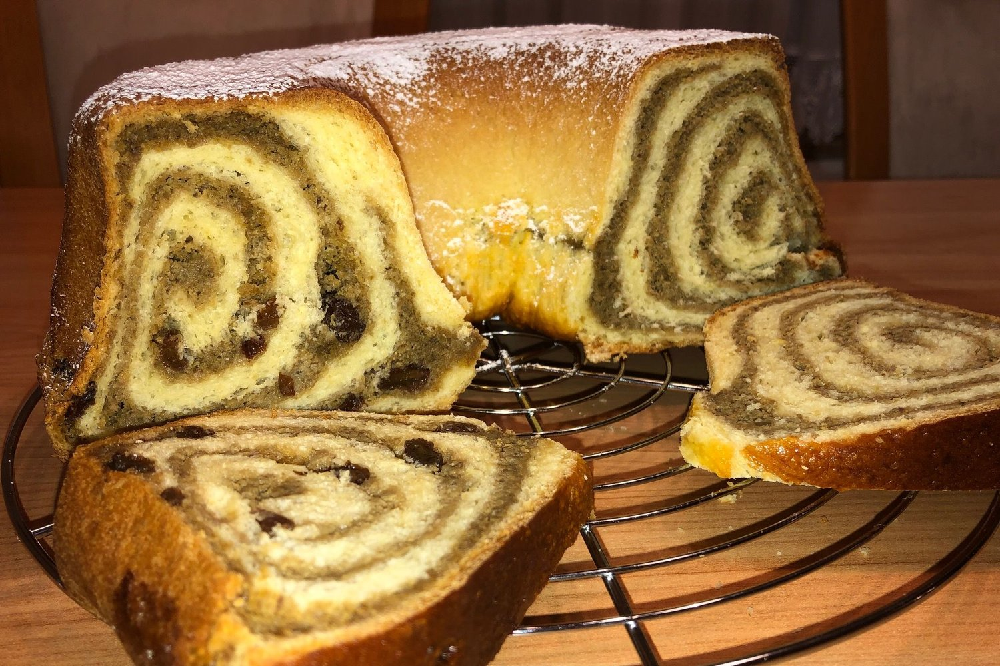

Osnovne babičine sestavine
Prava domača kuha temelji na preprostih, a kakovostnih sestavinah:
- Domače moka, jajca in maslo
- Sveža zelišča z vrta
- Suho sadje in oreščki
- Lokalno pridelana zelenjava
Ohranjamo kulinarično dediščino in okuse domače kuhinje
Dobrodošli na spletnem mestu, posvečenem skrivnostim kuhinj naših babic. Tukaj boste našli preverjene recepti, ki so se prenašali iz roda v rod in ustvarjali toplino doma.

Prava domača kuha temelji na preprostih, a kakovostnih sestavinah: